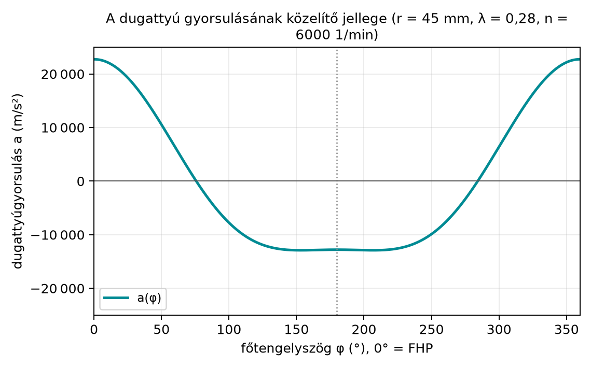

Amikor egy motor kopog, füstöl, eszik az olajat, vagy a kompressziómérés hengerenként nagyon eltérő értékeket mutat, a hiba gyakran a forgattyús hajtómű legbelső mozgó láncában, a dugattyúban, a dugattyúgyűrűkben, a dugattyúcsapszegben vagy a hajtórúdban van. A motor szerelésekor ezek az alkatrészek egyszerre kopó-, tömítő- és erőátviteli elemek: nem elég tudni, hogyan néznek ki, azt is érteni kell, milyen hő- és tömegerők hatnak rájuk, és milyen mérésekkel lehet eldönteni, javítható-e az alkatrész, vagy cserélni kell.
Képzelj el egy hengert metszetben a felső holtpont környékén. A hengerfalban egy alumínium dugattyú mozog, tetején a gáznyomás terheli, alatta a hajtórúd lengő mozgást végez. A dugattyú tetején nincsenek gyűrűk – a gyűrűk a tető alatti hornyokban ülnek. A felső két horonyban keskeny, nyitott, rugalmas kompressziós gyűrűk, a harmadikban egy olajlehúzó gyűrűcsomag. A dugattyúcsapszeg a dugattyú szemeiben és a hajtórúd kisfejében forog. A hajtórúd szára hosszú, karcsú rúd, a nagyszem pedig osztott, és a forgattyús csapot fogja körbe. Ezt az elrendezést metszetrajzon érdemes megtanulni, mert a műhelyben a hengerből kihúzott dugattyún ugyanezt a képet látjuk visszafelé.
A dugattyú mozgásának legfontosabb következménye, hogy a dugattyútömeg a fordulatszámmal rohamosan növekvő gyorsulási erőt okoz. A gyorsulás lefutását mutatja a következő szemléltető diagram:

A görbe jellegéből két dolog olvasható le. A felső holtpont (0°, 360°) környékén a legnagyobb a pozitív gyorsulás, mert a dugattyúnak gyorsan irányt kell váltania; az alsó holtpont (180°) környékén ellentétes irányú, kisebb abszolút értékű gyorsulás van, és mivel itt λ > 0,25, a görbe lapos, két kis minimummal. A görbe nem tiszta szinusz, mert a hajtórúd véges hossza miatt a dugattyú mozgása a forgattyús tengely elfordulásának nem tökéletes vetülete.
Definíció. A dugattyú a forgattyús hajtómű azon eleme, amely a hengerben alternáló mozgást végez, az égéstér egyik mozgó fala, és a gáznyomásból származó erőt a dugattyúcsapszegen és a hajtórúdon át a forgattyús tengelyre továbbítja.
Definíció. A dugattyúgyűrűk a dugattyú gyűrűhornyaiba szerelt, nyitott gyűrűk, amelyek az égéstér gáztömítését, a hő átadását és a hengerfal olajfilmjének szabályozását végzik.
Definíció. A dugattyúcsapszeg a dugattyút és a hajtórúd kisfejét összekötő csukló, amely a radiális erőket továbbítja.
Definíció. A hajtórúd a dugattyúcsapszeget és a forgattyús csapot összekötő rúd, amely a dugattyú alternáló (egyenes vonalú, váltakozó irányú) mozgását a forgattyús tengely forgómozgásává alakítja.
Összefüggés. A dugattyú elmozdulása és gyorsulása közelítőleg. A forgattyús hajtómű geometriai adataiból a dugattyú elmozdulása (a felső holtponttól mérve) a forgattyús tengely elfordulása szerint közelítőleg:
ahol a forgattyús sugár, a hajtórúd-arány, a hajtórúd hossza. Ebből állandó szögsebesség közelítéssel a dugattyú gyorsulása:
A felső holtpontban () a gyorsulás:
az alsó holtpontban () pedig:
A negatív előjel az alsó holtpontban az ellenkező irányú gyorsulást jelzi. A csúcsgyorsulás a fordulatszám négyzetével arányos, ezért magas fordulaton a tömegerő gyakran nagyobb, mint a gáznyomásból származó erő.
A dugattyú feladata a gáznyomásból származó erő továbbítása, a henger tömítése az égéstér felé, valamint a keletkező hő elvezetése a hengerfalra. Igénybevétele összetett: a benzinmotorokban a csúcsnyomás tipikusan 40–90 bar, dízelmotorokban 120–200 bar is lehet (ellenőrizendő: típusonként), a dugattyútetőt 2000–2500 °C-os égési gázok érik, a tető hőmérséklete pedig 300–400 °C fölé is mehet. Ezenkívül a dugattyú minden irányváltáskor tömegerőknek, a hengerfalban oldalnyomásnak, a gyűrűhornyokban pedig mikromozgásokból származó kopásnak van kitéve.
A dugattyú anyaga ma jellemzően alumínium-szilícium ötvözet, például AlSi12CuNi jellegű anyag (az anyagjelölést az Anyagtani alapfogalmak, fémtan és a vas–szén diagram alapján kell értelmezni). A szilícium csökkenti a hőtágulást, a réz és a nikkel javítja a melegszilárdságot. Nagy terhelésű motorokban kovácsolt alumíniumdugattyút használnak, a dízelmotorok egyes változataiban a tetőnél vasbetét vagy gyűrű-betét merevíti a kopásnak jobban kitett hornyot.
A dugattyú hidegen nem kör, hanem ovális: a csapszeg furatának irányában kissé kisebb átmérőjű, mint a rá merőlegesen. Meleg állapotban a hőtágulás miatt körré válik. Hossz mentén is kismértékben kúpos vagy lépcsős: a meleg tető környékén nagyobb hőtágulás, ezért a tetőnél kissé kisebb átmérőt mérünk. A dugattyú szoknyája (köpeny) a viszonylag hűvösebb alsó rész, amely vezeti és kopását csökkenti. A szoknyán gyakran grafit, molibdén vagy műanyag alapú súrlódáscsökkentő bevonat van.
A dugattyú hűtése többlépcsős: a hő a tetőből a gyűrűkön át a hengerfalra, illetve a szoknyán át is távozik. Nagy terhelésű motorokban a dugattyú belső oldalára olajsugarat vezetnek, amely a tető alját hűti; egyes dízeldugattyúkban a gyűrűmező közelében öntött hűtőcsatornában kering az olaj.
A dugattyúgyűrűk három csoportra oszthatók: az első két horonyban kompressziós gyűrű, a harmadikban olajlehúzó gyűrű van. Az első kompressziós gyűrű elsősorban az égéstér tömítését és a dugattyú hőjének átadását végzi; anyaga ma gyakran nemesíthető acél vagy gömbgrafitos öntöttvas, felülete nitridált, krómozott vagy PVD-bevonatos. A második kompressziós gyűrű a tömítés mellett már az olaj visszatartásában is részt vesz, ezért gyakran kúpos futófelületű.
Az olajlehúzó gyűrű feladata, hogy a hengerfalon egyenletes, vékony olajfilmet hagyjon, a felesleget pedig leválassza. Sok változata acél lamellapárból és köztük lévő rugós tágítóból áll, más kialakításban hasított gyűrű és belső rugó kombinációja. Az olajlehúzó gyűrű alatt a dugattyú fala visszafolyó furatokat tartalmaz, amelyeken az összegyűlt olaj a dugattyú belső terébe jut.
A gyűrűk beszerelésekor a gyártói jelölést kell keresni: ha a gyűrűn
TOP vagy hasonló jel van, az a dugattyútető felé nézzen. A
kúpos gyűrűket sem szabad megfordítani, mert akkor a kúp felfelé húzná
az olajat az égéstérbe. A gyűrűvégeket a dugattyúba szerelés után körben
el kell osztani, jellemzően egymástól 120°-ra, hogy a zárhézagok ne
essenek egy vonalba.
Az (a) metszeten felülről lefelé a dugattyútető, a tűzpalást, az 1. horonyban a négyszög keresztmetszetű kompressziós gyűrű (TOP jel felfelé, a horony felső falánál a horonyhézag), a 2. horonyban a kúpos gyűrű, amelynek alsó éle lefelé kaparja az olajat, a 3. horonyban két acéllamella és a tágító, alatta a visszafolyó furat, majd a csapszegfurat és a szoknya látható. A (b) felülnézet a 120°-ra elosztott zárhézagokat mutatja a csapszegtengelytől és a nyomóoldaltól eltolva (ellenőrizendő: gyártói adat), a (c) rész a zárhézag és a horonyhézag mérését. A HTML-képsor a fordítva beszerelt kúpos gyűrű hatását is bemutatja.
A dugattyúcsapszeg anyaga tokos keményített acél, felületi keménysége jellemzően 60–64 HRC (ellenőrizendő: gyártói adat). A csapszeg kialakítása általában üreges, hogy kisebb legyen a tömege. A leggyakoribb a „úszó csapszeg” elrendezés: a csapszeg mind a dugattyú szemeiben, mind a hajtórúd kisfejében foroghat. Axiális elmozdulását a dugattyú furataiban elhelyezett rugós biztosítógyűrűk korlátozzák. Ritkább a rögzített csapszeg, ahol a hajtórúd kisfejébe szorosan illesztik, és a dugattyú szeme forog rajta.
Az úszó csapszeget hidegen nem szabad erőszakkal behúzni: a szoros illesztés miatt a dugattyút a gyártói javítási előírás szerint mérsékelten melegítik, jellemzően 60–80 °C-ra, így az alumínium kitágul (ellenőrizendő: gyártói adat). A csapszeg és a furat közötti hézag nagyon kicsi, ezért minden szerelésnél tiszta, sérülésmentes felületet kell biztosítani.
A hajtórúd anyaga általában nemesíthető acél, például C70, 42CrMo4 vagy 36MnVS4 jellegű anyag (ellenőrizendő: az EN-szabvány szerinti aktuális jelölés). Verseny- és nagyteljesítményű motorokban nagy szilárdságú kovácsolt acél, esetleg titán hajtórúd is előfordul. A hajtórúd három fő része: a kisfej a csapszeghez, a szár a két fej közötti karcsú rúd, a nagyszem pedig a forgattyús csaphoz csatlakozik. A szár kialakítása jellemzően dupla T vagy hasonló profil, hogy kis tömeg mellett nagy hajlítási merevségű legyen.
A nagyszem osztott, mert a forgattyús csapra szerelve csak így helyezhető fel. A hagyományos megoldásban egyenes osztással készül sapka és anyarúd, ma azonban sok motorban törött osztású hajtórudat használnak. A törött osztás során a nagy szemet szándékosan eltörik, és a törésfelület jellegzetesen érdes, egymáshoz pontosan illeszkedő felület lesz. Ezt a felületet nem szabad csiszolni, köszörülni vagy síkolni, mert az megváltoztatja az illesztést; a sapka és az anyarúd csak párosítva használható.
A hajtórúdcsavarok nagy szilárdságú, különösen gondosan méretezett elemek. Szerelésük gyakran nyúlásos vagy nyomaték+szöghúzással történik, például 20 Nm + 90° formában, ami azonban csak tanulási példa (ellenőrizendő: gyártói javítási adat). A csavarokat sok motorkonstrukcióban egyszer használatosnak kell tekinteni, vagy a megengedett újrahasználatot a gyártói utasítás adja meg. A hajtórúd kisfejében gyakran bronzpersely van a csapszeg számára; a nagyszem belső csapágycsészéit a következő, a forgattyús tengelyt tárgyaló alfejezet tárgyalja.
A robbantott ábra tételei: 1 dugattyú (a tetőn példaként a beépítési irányjel), 2–3 kompressziós gyűrűk, 4 olajlehúzó gyűrű, 5 dugattyúcsapszeg, 6 biztosítógyűrűk, 7 hajtórúd kisszem perselyével, 8 I-profilú hajtórúdszár, 9 nagyszem, 10 csapágycsészék, 11 hajtórúdfedél kiemelt törött osztású felülettel, 12 hajtórúdcsavarok (sok motorban egyszer használatosak, gyártói adat szerint). A HTML-változatban a tételekre mutatva megjelenik a nevük, anyaguk és a szerelési megjegyzés.
Számítás. Adott: ; ; . Keresett: a dugattyú gyorsulása a felső és az alsó holtpontban.
Először a hajtórúd-arányt számítjuk:
A szögsebesség:
A gyorsulási tényező:
A felső holtponton:
Átszámítva g-re:
Az alsó holtponton:
ami abszolút értékben körülbelül 1300 g. Az ellenőrzéshez nézzük a nagyságrendet: 6000 1/min fordulaton a dugattyú tömege több ezer g gyorsulásnak kitett, ezért a tömegerők nagyon nagyok. A csúcsgyorsulás a felső holtpontban nagyobb, mert a hajtórúd geometriája miatt itt nagyobb a gyorsulás.
Példa. Egy 1. kompressziós gyűrűt a hengerbe toltak, merőlegesen, a dugattyúval. A gyártói javítási adat szerint a zárhézag 0,20–0,40 mm lehet. A szerelő hézagmérővel 0,52 mm-t mér. Eldöntendő, hogy a gyűrű használható-e.
A mért 0,52 mm nagyobb, mint a felső határ 0,40 mm, ezért a gyűrű ebben a hengerben nem használható. A túl nagy zárhézag a gyűrűvégeknél nagyobb gázátfúvást, olajfelhúzást és kompresszióvesztést okoz. A mérési jegyzőkönyvbe be kell írni a mért értéket, a gyártói határt és az ítéletet. A munka következő lépése a hengerfal és a dugattyú hézagának felmérése, mert a nagy zárhézag nemcsak a gyűrű kopásából, hanem a henger furatának tágságából is adódhat. Az érték tanulási példa (ellenőrizendő: gyártói adat).
Az (a) rész a mérési helyzetet mutatja: a gyűrűt a dugattyúval merőlegesen a gyártói mélységbe tolják; a (b) felülnézeten a hézagmérő lamella a zárhézagban van, a mért 0,52 mm meghaladja a 0,40 mm-es felső határt. A (c) kép a gyűrűszerelő fogós felszerelést mutatja (csak a szükséges mértékben tágítva, TOP jel felfelé), a (d) a hibás, kézzel csavart vagy túltágított gyűrűt. A zárhézagok elosztását a gyűrűkről szóló ábra mutatja.
A dugattyú, gyűrűk, csapszeg és hajtórúd vizsgálata a következő méréseket és ellenőrzéseket igényli:
Továbbvitt eredmény. A dugattyú, gyűrűk, csapszeg és hajtórúd itt tanult állapotjellemzői (hézagok, kopási határok, gyorsulási igénybevétel) a Diagnosztikai alapfogalmak és a motor mechanikai állapotvizsgálata alfejezetben kerülnek vissza, amikor kompressziómérést, nedves kompressziómérést és szétszereléses kopásfelmérést végzünk. A hajtórúd nagyszemét és csapágyait pedig a Forgattyús tengely, lendkerék, csapágyak és tömegkiegyenlítés alfejezet köti össze a forgattyús tengellyel.
Egy négyhengeres benzinmotor ügyfélpanasza: erős olajfogyasztás, gyorsításkor kékes füst, és hengerenkénti kompressziómérésnél az egyik henger 9,5 bar, a többi 12,2–12,5 bar. A nedves kompressziómérés során kevés olaj a hengerbe juttatása után az alacsony érték 11,8 barra emelkedik, ami a dugattyú–gyűrű–henger tömítési lánc kopására utal.
A szétszerelés után a hibafelvételezés a következő eredményt adja: a dugattyú szoknyája erősen kopott, a szoknya–hengerfurat hézag a gyártói felső határ kétszerese, a kompressziós gyűrű zárhézaga 0,58 mm a megengedett 0,40 mm helyett, az olajlehúzó lamellák pedig kokszosak és beragadtak. A hajtórúd repedésvizsgálata negatív, a csapszegjáték határérték alatt marad.
A javítás során a hengerfuratot felmérik, mérlegelik a túlméretre
fúrást és hónolást (vagy a gyártó szerint csak hónolást). A dugattyúkat
és a gyűrűket új, a gyártó által előírt méretosztályú alkatrészekre
cserélik. A dugattyúk beszerelésénél betartják a gyűrűhézag-értékeket, a
gyűrűk TOP jelölését, a dugattyú melegítését a csapszeg
beépítésénél, és a hajtórúdcsavarokat nyomaték+szög eljárással, új
csavarokkal húzzák meg. A szerelés után kompressziómérést és rövid
próbajáratást végeznek. A tanulság: a kékes füst és az olajfogyasztás
nem azonnali, hanem hosszú kopási folyamat eredménye, ezért a
kompressziómérés és a rögzített mérési adatok alapján kell dönteni a
motor szétszereléséről.
A gyűrű beépítési irányának figyelmen kívül
hagyása. Ha a kúpos második gyűrűt fordítva szerelik be, az
olajat felfelé húzza, amitől a motor kéken füstöl, és az égéstérben
kokszlerakódás keletkezik. Helyes gyakorlat: a gyártói TOP
jelölést és a gyűrűprofil irányát mindig ellenőrizni kell.
A hajtórúd törött osztású felületének sérülése. A törött osztású hajtórudat szétszereléskor nem szabad letenni a törésfelületre, mert a mikroszkopikus illesztési csúcsok megsérülhetnek. Helyes gyakorlat: a sapkát és az anyarudat párosítva, a törésfelületet védve, tiszta felületen tárolni.
A hajtórúdcsavar „érzésre” való meghúzása. A hajtórúdcsavar nyúlásos meghúzást igényel; a túl kis nyomatékú vagy egyenetlen meghúzás csapágykopást, a túl nagy nyomaték pedig csavar törését okozhatja. Helyes gyakorlat: kalibrált nyomatékkulcs, gyártói nyomaték+szög, és a megengedett újrahasználat betartása.
Igaz-e, hogy az úszó csapszeg a dugattyúban és a hajtórúd kisfejében is foroghat? (Igaz, és axiális rögzítését általában biztosítógyűrűk adják.)
Ha a motor fordulatszámát kétszeresére növelik, hogyan változik a dugattyú csúcsgyorsulása? (A gyorsulás a fordulatszám négyzetével arányos, tehát négyszeresére nő.)
Mi a kompressziós gyűrű két fő feladata? (Tömítés és hőelvezetés a hengerfalra.)
Miért ovális a dugattyú hidegen a csapszeg irányában? (Mert a hőtágulás és az anyagfelhalmozódás kompenzálása, valamint az oldalnyomás hatása miatt meleg állapotban így lesz kör keresztmetszetű.)
Mi a hiba ebben az eljárásban: „A hajtórúdcsavart szokásos kézi nyomatékkal húzom meg”? (A hajtórúdcsavart a gyártói nyomaték+szög eljárással, kalibrált kulccsal kell meghúzni.)
1. feladat (A). Nevezd meg a dugattyú fő részeit, és társítsd hozzájuk a feladatukat (tető, gyűrűmező, szoknya, csapszegfurat).
2. feladat (A). Számítsd ki a dugattyú csúcsgyorsulását a felső holtpontban, ha , és . Add meg az eredményt m/s²-ben és g-ben is.
3. feladat (B). Egy gyűrűhorony magasságát mérve 2,02 mm, a gyűrű vastagsága 1,96 mm. A gyártói előírás szerint a horonyhézag 0,03–0,07 mm lehet. Hasonlítsd össze, és mondd meg, hogy a mért hézag megfelelő-e.
4. feladat (B). Rendezd a megfelelő sorrendbe a
dugattyú és a hajtórúd szerelésének alábbi, összekevert lépéseit: a
hajtórúdsapkát a párosító jelek szerint felhelyezni; a gyűrűket
TOP jellel felfelé felszerelni; a hajtórúdcsavarokat
nyomaték+szög eljárással meghúzni; a biztosítógyűrűket beszerelni; a
dugattyút gyűrűszorítóval a hengerbe tolni; a dugattyút a gyártói
hőmérsékletre melegíteni; a gyűrűzárakat elosztani; a csapszeget
behelyezni; a hajtórúd kisfej perselyét megolajozni.
5. feladat (C). Magyarázd el, miért kritikus a dugattyú hűtőcsatornája, és miért építik a hűtést a gyűrűk hőhídjaira. Mi történhet, ha a gyűrűk nem fekszenek fel rendesen a hengerfalra?
6. feladat (D). Egy motorból a következő tüneteket és mérési adatokat kapod: olajfogyasztás, kékes füst, kompresszió 10,5 bar az első hengeren és 12,4 bar a többiben; a szétszereléskor a gyűrűzárhézag 0,51 mm (előírt 0,20–0,40 mm), a dugattyúhézag a specifikáció felső határa felett. Elemezd az okot, és javasold a javítást. Ez a feladat készíti elő a Diagnosztikai alapfogalmak és a motor mechanikai állapotvizsgálata alfejezetben szereplő kompressziómérés értelmezését.
Igaz. Az úszó csapszeg mindkét helyen foroghat, axiális elmozdulását biztosítógyűrűk akadályozzák.
A gyorsulás az összefüggés miatt a fordulatszám négyzetével arányos; kétszeres fordulatszámnál négyszeres csúcsgyorsulás.
Tömítés és hőelvezetés.
Hidegen azért ovális, hogy meleg állapotban a hőtágulás miatt kör keresztmetszetű legyen; a csapszeg irányában lévő nagyobb anyagmennyiség okozta tágulást is kompenzálja.
A hiba az, hogy a hajtórúdcsavart nem érzésre, hanem gyártói nyomaték+szög eljárással kell meghúzni; különben a csavar vagy a csapágy károsodhat.
1. feladat. A dugattyú fő részei: tető (az égéstér határfelülete), gyűrűmező (a gyűrűhornyokkal, a tömítés és hőelvezetés helye), szoknya/köpeny (a dugattyú vezetése, oldalerők felvétele), csapszegfurat (a csapszeg támogatása, erőátadás a hajtórúdra).
2. feladat. Adott: ; ; . Keresett: .
Az eredmény nagyságrendje reális nagy fordulaton, mert a dugattyú tömege több ezer g gyorsulást szenved.
3. feladat. A horonyhézag a horonymagasság és a gyűrűvastagság különbsége:
A megengedett 0,03–0,07 mm tartományba beleesik, tehát a horonyhézag megfelelő, de a mérési jegyzőkönyvbe be kell írni a tényleges értéket. Ellenőrzésül: ha a mért horonyhézag túl nagy lenne, az a horony oldalfalainak kopását jelezné.
4. feladat. Helyes sorrend: 1. a hajtórúd kisfej
perselyét megolajozni; 2. a dugattyút a gyártói hőmérsékletre
melegíteni; 3. a csapszeget behelyezni; 4. a biztosítógyűrűket
beszerelni; 5. a gyűrűket TOP jellel felfelé felszerelni;
6. a gyűrűzárakat elosztani; 7. a dugattyút gyűrűszorítóval a hengerbe
tolni; 8. a hajtórúdsapkát a párosító jelek szerint felhelyezni; 9. a
hajtórúdcsavarokat nyomaték+szög eljárással, új csavarokkal meghúzni. A
lépések közben a csapszegnek könnyen kell forognia, és a gyűrűk
zárhézagát is ellenőrizni kell.
5. feladat. A hűtőcsatorna a dugattyú belsejében, a gyűrűmező közelében lévő üreg, amelyen olaj áramlik. Azért kritikus, mert a dugattyútető hőmérséklete nagyon magas, és a hőt el kell vezetni, különben melegszilárdsági és olajkokszosodási problémák lépnek fel. A gyűrűk hőhídnak tekinthetők, mert a tető hője rajtuk keresztül jut a hengerfalra. Ha a gyűrűk nem fekszenek fel rendesen a hengerfalra, a hőátadás leromlik, a tető túlmelegszik, a gyűrűk beragadnak, és gázátfúvás, olajfogyasztás, kompresszióvesztés alakul ki.
6. feladat. A tünetek és mérések alapján a dugattyú–gyűrű–henger tömítési lánc kopott. Az első henger alacsonyabb kompressziója valószínűleg a nagy gyűrűzárhézagnak és a megnövekedett dugattyúhézagnak köszönhető, mert a gáz az égéstérből a forgattyúház felé átfúj. A kékes füst és az olajfogyasztás az olajlehúzó gyűrűk elhasználódására, kokszosodására utal. A javítás során fel kell mérni a hengerfuratot, majd a kopás mértékétől függően túlméretre fúrni és hónolni, vagy csak hónolni; a dugattyúkat és gyűrűket a gyártói méretosztály szerint cserélni; a csapszeget és a hajtórudat ellenőrizni; a motor összeszerelése után kompresszióméréssel és próbajárattal ellenőrizni a tömítést.
A forgattyús hajtómű négy vizsgált eleme a dugattyú, a dugattyúgyűrűk, a dugattyúcsapszeg és a hajtórúd. A dugattyú gáznyomást, hőterhelést és tömegerőket visel, anyaga jellemzően alumínium-szilícium ötvözet, hőtágulását ovális és kúpos kialakítással, valamint olajsugaras hűtéssel kezelik. A dugattyúgyűrűk tömítenek, hőt vezetnek és szabályozzák az olajfilmet; a kompressziós gyűrűk száma jellemzően kettő, az alsó az olajlehúzó. A dugattyúcsapszeg leggyakrabban úszó kivitelű, axiális rögzítése biztosítógyűrűkkel történik. A hajtórúd nemesíthető acélból készül, kisfejét és osztott nagyszemét törött vagy hagyományos osztással alakítják ki; a hajtórúdcsavarok meghúzása nyomaték+szög eljárással történik. A dugattyú gyorsulásának csúcsértéke a felső holtpontban közelítőleg , és a fordulatszám négyzetével nő. Továbbvitt eredmény. A dugattyú–gyűrű–henger tömítési lánc állapotjellemzői a Diagnosztikai alapfogalmak és a motor mechanikai állapotvizsgálata alfejezetben kompressziómérésnél és szétszereléses kopásfelmérésnél, a hajtórúd nagyszemének csapágyai a Forgattyús tengely, lendkerék, csapágyak és tömegkiegyenlítés alfejezetben kerülnek elő.
A fejezet az anyagtudomány, a mechanika és a gyártói javítási gyakorlat tartós alapjaira épít. Ellenőrizendő: a csúcsnyomás- és hőmérsékletértékek, a dugattyúhézag, gyűrűzárhézag, horonyhézag és csapszegjáték példaértékei, a hajtórúdcsavar meghúzási nyomaték–szög értéke, a dugattyú melegítési hőmérséklete, valamint a konkrét anyagjelölések aktualitása a hatályos EN-szabványok és a gyártói javítási adatok szerint.